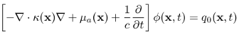
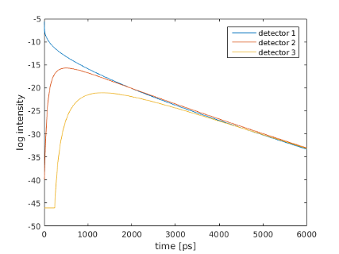

| Image Reconstruction in Diffuse Optical Tomography |
Toast toolbox tutorial: Generating time domain dataIn this tutorial we simulate the data generated by a time-domain DOT data acqusition system. In time-domain systems, the sources are short laser pulses in the picosecond range, and the temporal profile of the transmitted light is measured with time-resolved detectors. To run this tutorial yourself, you need Matlab, and you have to install the Toast toolbox on your computer. To save you typing, the full Matlab script for this example can be downloaded here. Step 1: Setting up the time domain system matrixThe time-domain version of the diffusion equation is given by where ϕ is the real-valued photon density depending on position and time. In contrast to the steady-state problem of Tutorial 1, this PDE contains a time derivative of the photon density. We will approximate this by a finite difference scheme in time. The discretised version of the PDE is given by 
where K is the same stiffness matrix as for the steady-state problem, and M is the mass matrix. By approximating the derivative with a forward difference at time n and a backward difference at time n+1 and employing a trapezoid integration rule, we get 
where parameter θ controls the coupling of adjacent time steps. Typical values are 0 (explicit scheme), 1 (implicit scheme), and 1/2 (Crank-Nicholson). After setting up the Toast code identically to Tutorial 1 (or Tutorial 2 for the inhomogeneous problem), up to computation of the stiffness matrix using the dotSysmat call, we now need to compute the mass matrix:
M = mesh.Massmat;
Step 2: Discrete integration in timeAssuming constant time steps Δt, and initial conditions Φ0 = 0, Q0 > 0, Qn = 0 (n > 0), we can write
dt = 10; % step size [ps]
nstep = 1000; % number of time steps theta = 0.5; % Crank-Nicholson K0 = -(K * (1-theta) - M * 1/dt); % matrix for step n K1 = K * theta + M * 1/dt; % matrix for step n+1 q = qvec/dt; % source at n=0 phi = K1\q; % Phi_1 gamma(1,:) = mvec.' * phi; % project to boundary measurements for i=2:nstep % loop over remaining steps q = K0 * phi; phi = K1\q; gamma(i,:) = mvec.' * phi; end This will generate the temporal response function for each measurement at all time steps in matrix gamma. Note that the solution of the linear system, phi = K1\q, at each time step can be time-consuming. It is generally more efficient to perform a LU-decomposition of K1 so that in the loop only a substitution using the two triangular matrices is required:
[L,U] = lu(K1);
for i=2:nstep q = K0 * phi; phi = U\(L\q); gamma(i,:) = mvec.' * phi; end Where memory constraints and the size of the problem do not allow the use of a direct solver, the backslash operator must be replaced with an iterative solver, such as gmres or cg. In that case, it is important to use a preconditioner, such as incomplete LU factorisation (ilu), to be computed before entering the loop.  |